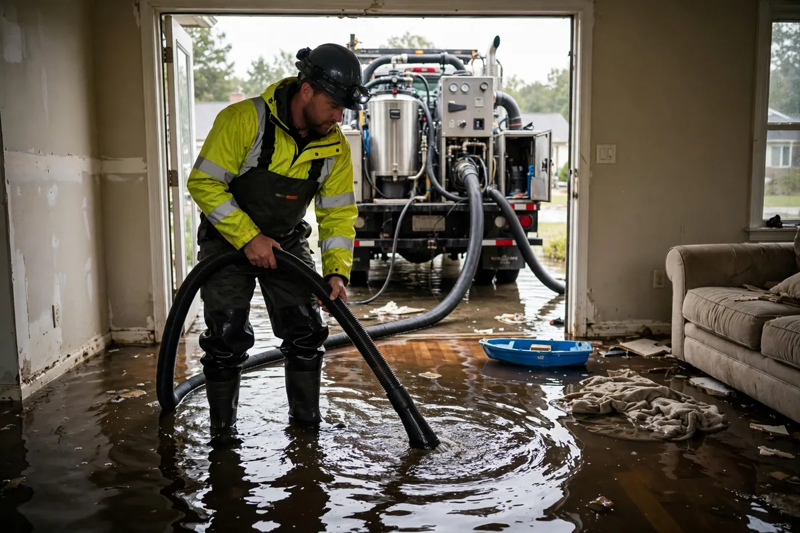

Standing Water Removal in Hollywood, FL
Before anything can dry, the water has to leave. Standing water removal is the urgent first act of every major water loss: pumps and high-capacity extractors pulling inches of water off floors, out of basements and crawl spaces, and away from the structure. It's the least technical step and the most time-critical — every hour water stands, it pushes deeper into materials and widens the entire job.

Understanding Standing Water Removal in Hollywood
Standing water comes from burst supply lines, storm intrusion, failed appliances, and sewer backups — and its behavior in the first hours decides the scale of everything after. Drywall wicks it upward, subfloors drink it downward, and carpet pad becomes a saturated sponge within minutes. The deeper it stands and the longer it sits, the more of the building joins the loss: baseboards, door frames, cabinetry toe-kicks, and wall cavities all start absorbing.
Speed here isn't about convenience, it's about scope control. Water removed in the first hours never gets the chance to migrate into framing or under flooring assemblies. That's also why the equipment matters — consumer wet-vacs move a trickle compared to truck-mounted or high-capacity portable extractors, and contaminated water demands proper handling from the first gallon, not after someone's already waded through it.
How We Handle the Job
Safety comes first: electrical hazards get assessed before anyone steps into standing water, and the water's category is identified on sight. Then extraction begins with the right equipment for the depth — submersible pumps for inches of water, weighted extractors that squeeze it from carpet and pad. Debris gets cleared as we go so it doesn't clog equipment or hide wet areas. Once the bulk water is out, moisture readings establish what absorbed the remainder, and the job hands off to mapping and structural drying with full documentation of what was removed.
We keep you informed as the water level drops — what we're seeing underneath matters for what comes next. Standing water removal is step one, and it's typically followed by related work such as emergency water extraction, structural drying, or flood cleanup, depending on what the water was and where it went.
Local Response and Insurance Support
Searching for standing water removal near me usually means you need help without delay. We answer emergency calls around the clock. Documentation — photos and moisture readings — supports conversations with your insurance carrier when the loss is sudden and accidental. We do not decide coverage; we provide clear technical information about the work performed.
When to Call
Call if you have active water, wet materials that are not drying, odors after a leak, or a backup that may involve contaminated water. Early action in Hollywood’s climate is almost always less disruptive than waiting. For neighborhood-specific service, see our service areas. For the full list of capabilities, visit all services.
Frequently Asked Questions
How quickly can standing water be removed?
It depends on depth, area, and access — but it's always the first priority on site. Pumps and commercial extractors move water orders of magnitude faster than anything a homeowner has in the garage.
Can I just use my shop vacuum?
For a small, clean spill, maybe. For anything covering real square footage — or any water that might be contaminated — professional extraction is faster, safer, and reaches water a shop vac leaves behind in pad and subfloor.
Is it safe to walk through the standing water?
Stay out until it's assessed. Electrical hazards are the immediate risk, and if the water is gray or black category, contact is a health issue. No belongings are worth that gamble.
What happens right after the water is gone?
Moisture mapping finds what the water left behind inside materials, then structural drying begins. Extraction removes the water you can see; the rest of the job handles the water you can't.